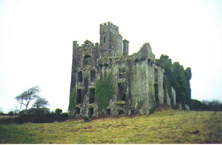

| Follow the above link to the main page for this topic or click the graphic below to visit the Homepage. |
 | Descendants of Valentine Blake Cullen forwarded by Dayan Goodsir Cullen |
Further information on the descendants of Valentine Blake Cullen have been forwarded by Dayan Goodsir Cullen, part of the family collection of letters and other documents detailing some events in the earlier generations. Of particular interest is the letter written by Susannah Isabel (Goodsir) Cullen to one of her sons. The letter records details concerning the military career of Valentine Blake Cullen in India, some family information, and details concerning property in Ireland. For those of you who have an interest in the Cullens of Manorhamilton, this fresh view of yet another branch of our Cullen Family Tree is a rare treat and certainly expands our horizons. We now have the Cullens of India to add to the list of far flung descendants.
Following the Family Tree and the Susannah Cullen letter, there is a list of notes concerning some of the details in the family tree and in the letter. This list of notes will likely be added to as new information surfaces.
(1) Valentine Blake Cullen b.1816 retired Captain (late of 5'th Bengal Cavalry) on pension. Died 15Sep1874, Canterbury.
+ Eleanor (Ellen) Tate (widow nee' Burd) Married May 1843 at Meerut. b.1803, daughter of John Burd; d. Rawalpindi before 1873.
. . . . (2) John Patrick Cullen b.17Mar1844, Meerut
. . . . + Susannah Isabel Goodsir Married 21Aug1872 at Bangalore. Susannah b.1837 daughter of Joseph Goodsir.
. . . . . . . . (3) John Blake Cullen b.29May1873, Bangalore d.1914 Calcutta.
. . . . . . . . + Ellen Russell Married 7Jul1900 at Lucknow. Ellen b.1885 daughter of Frederick Russell.
. . . . . . . . . . . . (4) Sybil b.1902
. . . . . . . . . . . . (4) Margaret Kathleen b.1903
. . . . . . . . . . . . (4) Dorothy Isobel b.1904 no issue
. . . . . . . . . . . . (4) Valentine John Blake Cullen b.1906 no issue
. . . . . . . . . . . . (4) Mary b.1912
. . . . . . . . (3) James Goodsir Cullen b.1875 Secunderabad. Capt late 16'th Queen's Lancers and Indian Army.
. . . . . . . . + Hannah Masterson
. . . . . . . . . . . . (4) William James Goodsir Cullen b.1907 (Major R.I.A.S.C.)
. . . . . . . . . . . . (4) Earnest John Goodsir Cullen (Doctor)
. . . . . . . . . . . . (4) Patricia
. . . . . . . . (3) Susan Sybella Cullen b.4Nov1876, North Trimulgheny (Secunderabad) no issue.
"All that I can remember re. this property called Menlough Castle Galway is as follows:- your grandfather - Valentine Blake Cullen came to India with 16th Queen's Lancers on purpose to find an elder brother named "William" I think, who had left home with the papers, titles etc belonging to this property which came to the Cullens thro: the Blakes on your grandfather's mother's side, she being a Blake. After some time your grandfather found his brother somewhere in India dying and on his deathbed gave the papers to his brother Valentine Blake Cullen who at that time got a commission as a Riding Master of 5th Bengal Cavalry. This you will find certainly in some old army list of early seventies as his name appeared in it long after he died. That will also tell you when he retired. At this time he went home to Galway and took your father with him, who was then only a boy. Your father enlisted in 19th Hussars. Then he quarrelled with his father because he would not tell him whether his mother was alive or dead. On this he left 19th Hussars and joined 16th Lancers to come and find where his mother was. After a great many enquiries he found that his mother had died in Rawalpindi. We wrote to his father in 1873. This letter was returned, in 1877 we went home & we went to Canterbury to see his father who had been living there many years and found that he had been dead 2 years. We then wrote to war office and got reply I am sending with this. He also found that his father's papers etc had been taken by the people in whose house he had died. Their name was Brooks who had been in the metro police - we could not raise [raise? word unclear] him as you will see. The enclosed letters marked A & B. I have a paper in the box at Lucknow when we go down. This will tell you where Sir Valentine Blake died. After him 2 maiden aunts lived there & your grandfather always said after their deaths he would claim their property. I do not know of anything more than this at present except that your grandfather married a widow named Tate who had several children, but your father was the only child by Cullen. You must write to Depot of 16th Lancers in Canterbury I think for particulars of your grandfather's marriage. Say his papers were lost and you are referring to them for a copy of his marriage certificates as it took place while he was with them."
Note: In the above letter, "your grandfather" refers to Valentine Blake Cullen, while "your father" refers to John Patrick Cullen the husband of Susannah Isabel Cullen. The property mentioned passing from the Blakes to the Cullens is evidently that of Menlough Castle in Co Galway. The Blakes of Menlough Castle were a prominent family there since the early 1600's. Historical documents contain frequent mentions of Sir Valentine Blake, Sir Walter Blake and other titled Blakes, as the Blakes of Menlough are Baronets (they still exist and live in England). Valentine Blake Cullen was named so as to emphasize the link to the Blake family.

The following is a transcript of a letter written by James Goodsir Cullen in March of 1923. James Goodsir Cullen (b.1875), a grandson of Valentine Blake Cullen, was a Captain in the 16'th Queen's Lancers and Indian Army. The letter is addressed to Colonel J.G. Ponsonby. The purpose for James writing the letter was to secure employment in England before leaving India. In the letter, Harold is a good friend of Cullen and a son of Colonel Ponsonby.
|
130.Moghalpura, Lahore
The Punjab India 1'st March, 1923. To Sir, I had hoped that during the late War I should have had a chance of visiting England but the fates were against it and all my War services were spent in the Eastern Theatre. I am in possession of 9 medals. I am now very desirious of returning Home but can only do so if I can make sure of getting something to do. I am not afraid of hard work as I have been at it for years. I have no particular profession or trade, the Profession of Arms having been mine practically all my life, still, there are a number of things I can do well, viz, Training Horses (Polo, Hunting, etc but not racing) My principal reason for wanting to return Home for good is my two sons' education. Having been away from the Old Country for 30 years I know no one there who could help me to secure a job so I am tempted to ask if you could help me to do so. I know that unemployment is rife in England but the necessity of putting my boys aged 16 and 10 years in an English School is urgent, still, it would be foolish to throw up my present post and go Home on the off chance of finding work. I am at present employed as Special Superintendent of the Locomotive Superintendent's Office, North Western Railway, Moghalpura Lahore. The entire Staff and office with 125 clerks is under my control. My salary is £ 300/- per annum. I enclose some certificates and you will observe that I have risen from the ranks. I think I can say, without boasting, that merit and not preferment enabled me to do so. My wife and I are pure Irish and I am a Mason. I trust you will pardon my taking up your valuable time and can assure you of my deep gratitude for any help. Could you please let me have Harold's address. I have the honour to be
Sir Your most obedient servant J.G. Cullen Capt: (Retired) late 16th "Queens" Lancers & Indian Army. |